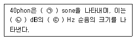
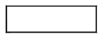
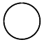
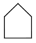
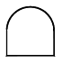
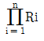
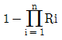
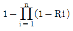
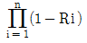

건설안전산업기사 (2014-09-20 기출문제)
1과목: 산업안전관리론
1. 다음 중 안전성적을 나타내는 지표로서 재해 빈도의 다수와 상해 정도의 강약을 종합하여 나타내는 지표는?
- 종합재해지수
- 근로손실계수
- 안전활동률
- safe-t-score
(정답률: 73%)

2. 다음 중 교육훈련 평가방법의 종류로 볼 수 없는 것은?
- 관찰법
- 면접법
- 실연법
- 자료분석법
(정답률: 63%)
3. 다음 중 안전관리조직과 구비조건으로 가장 적절하지 않은 것은?
- 회사의 특성과 규모에 부합되게 조직되어야 한다.
- 조직을 구성하는 관리자의 책임과 권한이 분명해야 한다.
- 조직의 기능이 충분히 발휘될 수 있는 제도적 체계를 갖추어야 한다.
- 부서간의 충돌을 방지하기 위하여 생산 라인과 관계가 적은 조직이어야 한다.
(정답률: 82%)
4. 심리검사의 특징 중 “검사의 관리를 위한 조건과 절차의 일관성과 통일성”을 의미하는 것은?
- 규준
- 표준화
- 객관성
- 신뢰성
(정답률: 73%)
5. 안전관리자가 안전교육의 효과를 높이기 위해서 안전퀴즈 대회를 열어 우승자에게 상을 주었다면 이는 어떤 학습원리를 학습자에게 적용한 것인가?
- Thorndike의 “연습의 법칙”
- Thorndike의 “준비성의 법칙”
- Pavlov의 “강도의 원리”
- Skinner의 “강화의 원리”
(정답률: 57%)
6. 재해의 발생형태 분류 중 사람이 평면상으로 넘어졌을 경우 무엇이라고 하는가?
- 추락
- 충돌
- 전도
- 협착
(정답률: 80%)
7. 다음 중 안전교육의 진행에서 “새로운 지식이나 기능을 설명하고 실연하는 단계”에 해당되는 것은?
- 확인
- 제시
- 적용
- 도입
(정답률: 53%)
8. 다음 중 안전모의 착장제를 구성하는 요소에 해당하지 않는 것은?
- 머리받침끈
- 머리고정대
- 머리받침고리
- 머리모체
(정답률: 59%)
9. 산업안전보건법령상 사업 내 안전ㆍ보건교육 중 근로자 정기안전ㆍ보건교육의 내용이 아닌 것은? (단, 산업안전보건 법 및 일반관리에 관한 사항은 제외한다.)
- 산업안전 및 사고 예방에 관한 사항
- 건강증진 및 질병 예방에 관한 사항
- 유해ㆍ위험 작업환경 관리에 관한 사항
- 작업 개시 전 점검에 관한 사항
(정답률: 41%)
10. 부주의의 현상 중 긴장상태에서 일정시간이 경과하면 피로가 발생하여 의식이 점차적으로 이완되는 현상을 무엇이라 하는가?
- 의식의 단절
- 의식의 우회
- 의식수준의 저하
- 의식의 혼란
(정답률: 61%)
11. 다음 중 위험예지훈련의 방법으로 적절하지 않은 것은?
- 반복 훈련한다.
- 사전에 준비한다.
- 단위 인원수를 많게 한다.
- 자신의 작업으로 실시한다.
(정답률: 75%)
12. 다음 중 안전사고를 방지하기 위한 동기부여의 방법으로 가장 적합하지 않은 것은?
- 상벌을 줄 것
- 경쟁과 협동을 유도할 것
- 결과의 지식을 알리지 않을 것
- 안전 목표를 명확히 설정할 것
(정답률: 79%)
13. 다음 중 무재해운동을 추진하기 위한 3가지 요소(기둥)에 해당되지 않는 것은?
- 최고 경영자의 경영자세
- 소집단 자주 활동의 활성화
- 라인 관리자에 의한 안전보건 추진
- 직장 상ㆍ하간의 체계 확립 및 명령이행
(정답률: 67%)
14. 도수율이 8.24인 기업체의 연천인율은 약 얼마인가?
- 3.43
- 19.78
- 121.35
- 197.76
(정답률: 63%)
15. 다음 중 교육의 주체(subject of education)에 해당하는 것은?
- 강사
- 수강자
- 교재
- 교육방법
(정답률: 75%)
16. 작업현장에서 매일 작업 전, 작업 중, 작업 후에 실시하는 점검으로서 현장 작업자 스스로가 정해진 사항에 대하여 이상여부를 확인하는 안전점검의 종류는?
- 정기점검
- 임시점검
- 일상점검
- 특별점검
(정답률: 83%)
17. 재해의 발생은 관리도구의 결함에서 작전적, 전술적 에러로 이어져 사고 및 재해가 발생한다고 정의한 사람은?
- 버드(Bird)
- 아담스(Adams)
- 웨버(Weaver)
- 하인리히(Heinrich)
(정답률: 55%)
18. 산업스트레스의 요인 중 직무특성과 관련된 요인으로 볼 수 없는 것은?
- 조직구조
- 작업속도
- 근무시간
- 업무의 반복성
(정답률: 67%)
19. 산업안전보건법령상 안전ㆍ보건표지의 종류에 있어 인화성물질경고, 폭발성물질경고의 색채기준으로 옳은 것은?
- 바탕은 무색, 기본모형은 빨간색
- 바탕은 노란색, 기본모형은 검은색
- 바탕은 노란색, 기본모형은 빨간색
- 바탕은 흰색, 기본모형은 녹색
(정답률: 61%)
20. 다음 중 모럴 서베이(morale survey)의 효용으로 볼 수 없는 것은?
- 조직 또는 구성원의 성과를 비교ㆍ분석한다.
- 종업원의 정화(catharsis)작용을 촉진시킨다.
- 경영관리를 개선하는 데에 대한 자료를 얻는다.
- 근로자의 심리 또는 욕구를 파악하여 불만을 해소하고, 노동의욕을 높인다.
(정답률: 69%)
2과목: 인간공학 및 시스템안전공학
21. 다음 중 작업장에서 발생하는 소음에 대한 대책으로 가장 먼저 고려하여야 할 적극적인 방법은?
- 소음원의 격리
- 소음원의 제거
- 귀마개 등 보호구의 착용
- 덮개 등 방호장치의 설치
(정답률: 71%)
22. 다음 중 입식작업을 위한 작업대의 높이를 결정하는데 있어 고려하여야 할 사항과 가장 관계가 적은 것은?
- 작업자의 신장
- 작업의 빈도
- 작업물의 크기
- 작업물의 무게
(정답률: 55%)
23. 시스템안전분석기법 중 FMEA에 관한 설명으로 옳은 것은?
- 원자력 발전 및 화학설비 등에 적용하기 위해 개발되었고 전문가와 브레인스토밍 팀을 구성하여 분석한다.
- 휴먼에러와 휴먼에러에 의한 영향을 예견하기 위해 사용되며 HAZOP과 함께 사용할 수 있다.
- 그래픽 모델을 사용하여 분석과정을 가시화시키는 분석방법이며 논리기호를 사용한다.
- 시스템을 구성요소로 나누어 고장의 가능성을 정하고 그 영향을 결정하여 분석하는 방법이다.
(정답률: 68%)
24. 다음 설명 중 ( ) 안의 내용을 올바르게 나열한 것은?

- ㉠ 1, ㉡ 40, ㉢ 1000
- ㉠ 1, ㉡ 32, ㉢ 1000
- ㉠ 2, ㉡ 40, ㉢ 2000
- ㉠ 2, ㉡ 32, ㉢ 2000
(정답률: 72%)
25. 작업자가 평균 1000시간 작업을 수행하면서 4회의 실수를 한다면, 이 사람이 10시간 근무했을 경우의 신뢰도는 약얼마인가?
- 0.04
- 0.018
- 0.67
- 0.96
(정답률: 43%)
26. 다음 중 시각적 표시장치에 관한 설명으로 옳은 것은?
- 정량적 표시장치는 연속적으로 변하는 변수의 근사값, 변화경향 등을 나타냈을 때 사용한다.
- 계기가 고정되어 있고, 지침이 움직이는 표시장치를 동목형(moving scale) 장치라고 한다.
- 계수형(digital) 장치는 수치를 정확하게 읽어야 할 경우에 사용한다.
- 정량적 표시장치의 눈금은 2 또는 3의 배수로 배열을 사용하는 것이 좋다.
(정답률: 70%)
27. 정보를 전송하기 위해 표시장치를 선택하고자 할 때 다음 중 시각적 표시장치보다 청각적 표시장치를 사용하는 것이 효과적인 경우는?
- 정보의 내용이 복잡한 경우
- 수신자의 한 곳에 머물러 있는 경우
- 정보의 내용이 후에 재참조되는 경우
- 정보의 내용이 즉각적인 행동을 요구하는 경우
(정답률: 78%)
28. 다음 중 설비보전관리에서 설비이력카드, MTBF분석표, 고장원인대책표와 관련이 깊은 관리는?
- 보전기록관리
- 보전자재관리
- 보전작업관리
- 예방보전관리
(정답률: 59%)
29. 건강한 남성이 8시간 동안 특정 작업을 실시하고, 분당산소 소비량이 1.3L/분으로 나타났다면 8시간 총 작업시간에 포함될 휴식시간은 약 몇 분인가? (단, Murrell의 방법을 적용하며, 휴식 중 에너지소비율은 1.5kcal/min 이다.)
- 96분
- 144분
- 172분
- 192분
(정답률: 47%)
30. 다음 중 FT도에서의 컷셋(cut set)에 관한 설명으로 틀린 것은?
- 시스템의 약점을 표현한 것이다.
- 정상 사상(Top event)을 발생시키는 조합이다.
- 시스템이 고장나지 않도록 하는 사상의 조합이다.
- 패스셋(path set)과는 반대되는 개념이다.
(정답률: 59%)
31. 흑판의 반사율이 30%이고, 백목의 반사율이 75%일 때 흑판과 백목에 대한 대비는 얼마인가?
- -150%
- -60%
- 60%
- 150%
(정답률: 40%)
32. 다음 중 반복되는 사건이 많이 있는 경우에 FTA의 최소 컷셋을 구하는 알고리즘과 관계가 가장 적은 것은?
- MOCUS Algorithm
- Boolean Algorithm
- Monte Carlo Algorithm
- Limnios & Ziani Algorithm
(정답률: 72%)
33. 다음 중 통제표시비를 설계할 때 고려해야 할 5가지 요소가 아닌 것은?
- 공차
- 조작시간
- 일치성
- 목측거리
(정답률: 51%)
34. 다음 중 인체측정 특성의 최대치수를 기준으로 설계해야하는 대상이 아닌 것은?
- 출입문 크기
- 통로의 크기
- 그네의 하중
- 선반의 높이
(정답률: 71%)
35. 다음 중 FT도 작성에 사용하는 기호에서 그 성격이 다른 하나는?




(정답률: 62%)
36. 안전제어장치 중 사출기의 도어에 설치되어 도어가 열려 있는 경우에는 사출기가 동작되지 않도록 하는 것을 무엇이라 하는가?
- 비상제어장치
- 인터록장치
- 인트라록장치
- 트랜스록장치
(정답률: 59%)
37. 다음 중 신뢰도가 R인 요소 n개가 직렬로 구성된 시스템의 신뢰도를 나타낸 것은?




(정답률: 58%)
38. 다음 중 인간-기계 시스템의 종류와 가장 관계가 먼 것은?
- 기계 시스템
- 생태 시스템
- 수동 시스템
- 자동 시스템
(정답률: 72%)
39. 다음 중 MIL-STD-882A에서 분류한 위험 강도의 범주에 해당하지 않는 것은?
- 위기(critical)
- 무시(negligible)
- 경계(precautionary)
- 파국(catastrophic)
(정답률: 57%)
40. 다음 중 주로 어깨, 팔목, 손목, 목 등 상지의 작업자세로 인한 작업부하를 평가하기 위하여 영국에서 개발된 방법은?
- RULA 기법
- OWAS 기법
- NIOSH의 들기작업 지침
- Grag 에너지소비량 예측 모델
(정답률: 58%)
3과목: 건설시공학
41. 철골조립 및 설치에 있어서 사용되는 기계와 거리가 먼 것은?
- 진폴(Gin-pole)
- 윈치(Winch)
- 타워크레인(Tower crane)
- 리버스 서큘레이션 드릴(Reverse circulation drill)
(정답률: 68%)
42. 벽식 철근 콘크리트 구조를 시공할 때 벽과 바닥콘크리트를 한번에 타설하기 위해 벽체용 거푸집과 슬래브 거푸집을 일체로 제작하여 한번에 설치하고 해체할 수 있도록 한 대형 거푸집으로 트윈 쉘과 모노 쉘로 구분되는 대형 거푸집은?
- 플라이밍폼(Flying Form)
- 터널 폼(Tunnel Form)
- 슬라이딩 폼(Sliding Form)
- 갱폼(Gang Form)
(정답률: 72%)
43. 전체공사의 진척이 원활하며 공사의 시공 및 책임한계가 명확하여 공사관리가 쉽고 하도급의 선택이 용이한 도급제도는?
- 공정별분할도급
- 일식도급
- 단가도급
- 공구별분할도급
(정답률: 69%)
44. 시방서(Specification)는 발주자가 의도하는 건축물을 건설하기 위하여 시공자에게 요구하는 모든 사항을 나타낸 것중 도면을 제외한 모든 것이라 할 수 있다. 다음 중 시방서작성 시 서술내용에 해당하지 않는 것은?
- 재료, 장비, 설비의 유형과 품질
- 시험 및 코드요건
- 조립, 설치, 세우기의 방법
- 입찰참가 자격 평가기준
(정답률: 69%)
45. 흙막이 벽은 보통 버팀대로 지지되어 있으나 그 대신어스앵커를 사용하기도 하는데 어스앵커내부에서 인장응력을 받는 가장 중요한 역할을 하는 재료는?
- 철근
- 철망
- PC강선
- 철골부재
(정답률: 73%)
46. 한중 콘크리트 공사에서 콘크리트의 초기 동해 방지에 필요한 압축강도는 얼마인가?
- 5MPa
- 10MPa
- 15MPa
- 20MPa
(정답률: 47%)
47. 일반적인 공사입찰의 순서로 옳은 것은?
- 입찰통지→현장설명→입찰→개찰→낙찰→계약
- 현장설명→입찰통지→입찰→개찰→낙찰→계약
- 현장설명→입찰통지→입찰→낙찰→개찰→계약
- 입찰통지→입찰→개찰→낙찰→현장설명→계약
(정답률: 65%)
48. 잡석지정에 대한 설명으로 틀린 것은?
- 잡석지정은 세워서 깔아야 한다.
- 견고한 자갈층이나 굳은 모래층에서는 잡석지정이 불필요하다.
- 잡석지정을 사용하면 콘크리트 두께를 절약할 수 있다.
- 잡석지정은 지내력을 증진시키기 위해서 중앙에서 가장자리로 다진다.
(정답률: 58%)
49. 용접 착수전 검사항목에 속하지 않는 것은?
- 트임새 모양
- 모아대기법
- 운봉
- 구속법
(정답률: 60%)
50. 지반개량 공법 중 주로 점토질 지반에서만 이용되는 공법은?
- 웰포인트 공법
- 그라우팅 공법
- 바이브로 프로테이션공법
- 샌드드레인 공법
(정답률: 50%)
51. 지하수가 많은 지반을 탈수하여 건조한 지반으로 개량하기 위한 공법에 해당하지 않는 것은?
- 생석회말뚝(Chemico pile) 공법
- 페이퍼드레인(Paper drain)공법
- 잭파일(Jacked pile)공법
- 샌드드레인(Sand drain)공법
(정답률: 68%)
52. 거푸집 탈형시 콘크리트와 거푸집판의 분리를 원활하게 해 주는 것은?
- 보강재
- 박리제
- 긴결재
- 지지재
(정답률: 82%)
53. 정액도급 계약제도에 관한 설명으로 틀린 것은?
- 경쟁입찰로 공사비가 저렴하다.
- 건축주와의 의견조정이 용이하다.
- 공사설계변경에 따른 도급액 증강이 곤란하다.
- 이윤관계로 공사가 조잡해질 우려가 있다.
(정답률: 63%)
54. 무지주공법 중 보우빔(Bow beam)의 특징이 아닌 것은?
- 인보가 있어 스팬의 조정이 가능하다.
- 층고가 높고 큰 스팬에 유리하다.
- 무폼타이 거푸집이다.
- 구조적으로 안전성이 확보된다.
(정답률: 43%)
55. 철골공사의 녹막이칠에 관한 설명으로 틀린 것은?
- 초음파탐상검사에 지장을 미치는 범위는 녹막이칠을 하지 않는다.
- 바탕만들기를 한 강재표면은 녹이 생기기 쉽기 때문에 즉시 녹막이칠을 하여야 한다.
- 콘크리트에 묻히는 부분에는 녹막이칠을 하여야 한다.
- 현장 용접부분은 용접부에서 100mm 이내에 녹막이칠을 하지 않는다.
(정답률: 78%)
56. 지반의 토질시험 중에서 무게 63.5kg의 추를 76cm 높이에서 낙하시켜 샘플러가 30cm 관입하는데 따른 저항치를 측정하는 시험을 무엇이라 하는가?
- 전단시험
- 지내력시험
- 표준관입시험
- 베인시험
(정답률: 79%)
57. 철근콘크리트 공사에서 철근의 정착위치에 관한 설명으로 틀린 것은?
- 기둥의 주근은 벽에 정착
- 지중보의 주근은 기초 또는 기둥에 정착
- 벽철근은 기둥, 보, 바닥판에 정착
- 바닥판 철근은 보 또는 벽체에 정착
(정답률: 54%)
58. 아일랜드 컷(island cut)공법에서 토압의 대부분을 저항하는 것은?
- 흙막이 벽의 자체강성
- 주변부 구조물
- 앵커 인발력
- 중앙부 구조물
(정답률: 54%)
59. 발포제의 한 종류로 시멘트와의 화학반응에 의해 특수한 가스를 발생시켜 기포를 도입하는 혼화제는?
- 알루미늄 분말
- 포졸란
- 플라이애쉬
- 실리카흄
(정답률: 39%)
60. 모래 채취나 수중의 흙을 퍼올리는데 적당한 기계장비는?
- 불도저
- 드래그 라인
- 로더
- 캐리어 스크레이퍼
(정답률: 63%)
4과목: 건설재료학
61. 탄소함유량이 많은 순서대로 옳게 나열한 것은?
- 연철 ＞ 탄소강 ＞ 주철
- 연철 ＞ 주철 ＞ 탄소강
- 탄소강 ＞ 주철 ＞ 연철
- 주철 ＞ 탄소강 ＞ 연철
(정답률: 68%)
62. 환경문제 해결에 부응하는 특수 콘크리트 중 제올라이트(zeolite)등을 콘크리트에 적용하여 습도상승 등을 억제하는 콘크리트는?
- 조습성 콘크리트
- 저소음 콘크리트
- 자원순환 콘크리트
- 다공질 색상 콘크리트
(정답률: 76%)
63. 열가소성수지로서 두께가 얇은 시트를 만들어 건축용 방수재료로 이용되며 내화학성의 파이프로도 활용되는 것은?
- 폴리스티렌수지
- 폴리에틸렌수지
- 폴리우레탄수지
- 요소수지
(정답률: 52%)
64. 다음 중 각종 미장재료에 대한 설명 중 옳지 않은 것은?
- 회반죽바름은 수경성 재료이며 소석회에 물과 풀을 넣고 여물을 섞어 바른다.
- 질석모르타르는 질석을 모르타르에 혼입한 것으로 내화 피복용 바름재로 쓰인다.
- 돌로마이트 플라스터는 기경성 재료이며 건조수축이 크다.
- 석고 플라스터는 석고를 주원료로 하고 혼화재, 접착제,응결시간조절재 등을 혼합한 플라스터이다.
(정답률: 48%)
65. 건물의 바닥 충격음을 저감시키는 방법에 대한 설명으로 옳지 않은 것은?
- 유리면 등의 완충재를 바닥공간 사이에 넣는다.
- 부드러운 표면마감재를 사용하여 충격력을 작게 한다.
- 바닥을 띄우는 이중바닥으로 한다.
- 바닥슬래브의 중량을 작게 한다.
(정답률: 80%)
66. 다음 미장재료 중 기경성 재료에 해당되지 않는 것은?
- 진흙
- 석고 플라스터
- 회반죽
- 돌로마이트 플라스터
(정답률: 51%)
67. 목재의 심재와 변재에 대한 설명으로 옳지 않은 것은?
- 심재는 변재보다 강도가 크다.
- 변재는 흡수성이 커서 신축이 크다.
- 심재는 목질부 중 수심 부근에서 위치한다.
- 변재는 심재보다 다량의 수액을 포함하고 있다.
(정답률: 50%)
68. 금속재료의 부식 방지방법 중 옳지 않은 것은?
- 부분적인 녹은 빨리 제거할 것
- 큰 변형을 준 것은 가능한 한 담금질을 하여 사용할 것
- 표면을 청결하게 하고, 가능한 한 건조상태로 유지할 것
- 기밀 또는 수밀성 보호피막을 만들 것
(정답률: 75%)
69. 벽돌벽 두께 1.5B, 벽면적 40m2 쌓기에 소요되는 붉은 벽돌(190×90×57)의 소요량은? (단, 할증률 고려)
- 8850장
- 8960장
- 9229장
- 9408장
(정답률: 51%)
70. ALC 제품의 특징으로 옳은 것은?
- 방음, 단열효과가 떨어진다.
- 비내력벽으로 활용이 어렵다.
- 흡수성이 크다.
- 현장에서 절단 및 가공이 불가능하다.
(정답률: 61%)
71. 침엽수에 있어서 가도관 역할을 하는 목세포는 수목 전체적의 몇 % 정도를 차지하는가?
- 90~97
- 75~90
- 40~45
- 30~40
(정답률: 51%)
72. 골재의 입도와 최대치수에 대한 설명으로 옳지 않은 것은?
- 골재의 입도는 골재의 입자크기의 분포정도를 나타낸다.
- 입도분포가 양호한 골재는 실적률이 낮다.
- 단위용적당 굵은 골재의 최대치수가 지나치게 크면 재료 분리 현상이 커진다.
- 골재의 최대치수는 철근치수와 배근간격에 따라 결정된다.
(정답률: 49%)
73. 목재 건조의 목적 및 효과가 아닌 것은?
- 중량의 경감
- 강도의 증진
- 가공성 증진
- 균류 발생의 방지
(정답률: 44%)
74. 습도와 물을 특별히 고려할 필요가 없는 장소에 설치하는 목재 창호용 접착제로 적합한 것은?
- 페놀수지 목재 접착제
- 요소수지 목재 접착제
- 초산비닐수지 에멀션 목재 접착제
- 실리콘수지 접착제
(정답률: 50%)
75. 고강도 콘크리트 건축물의 폭렬방지 대책으로 콘크리트에 혼입하여 사용하는 섬유는?
- 강섬유
- 탄소섬유
- 아라미드섬유
- 폴리프로필렌섬유
(정답률: 44%)
76. 점토에 대한 설명으로 옳지 않은 것은?
- 점토는 불순물이 많을수록 흡수율이 크며, 강도와 비중은 감소한다.
- 점토의 주성분은 SiO2, Al2O3, Fe2O3, CaO, MgO 등 이다.
- 화학적으로 순수한 점토를 카올린, 구워진 점토분말을 샤모트라고 한다.
- 침적점토는 바람이나 물에 의해 멀리 운반되어 침적되므로 입자가 크며 가소성이 적다.
(정답률: 48%)
77. 골재의 조립률(Fineness Modulus)에 관한 설명 중 옳지 않은 것은?
- 모래보다 자갈의 조립률이 크다.
- 자갈의 조립률이 2.6~3.1이면 입도가 좋은 편이다.
- 같은 골재라도 입경(粒經)이 크면 조립률은 커진다.
- 조립률을 구하기 위해서 체가름 시험방법을 활용한다.
(정답률: 57%)
78. 전건(全乾)목재의 비중이 0.4일 때, 이 전건(全乾)목재의 공극율은?
- 26%
- 36%
- 64%
- 74%
(정답률: 37%)
79. 플라이애쉬를 혼입한 콘크리트의 특성에 관한 설명 중 옳은 것은?
- 동일한 워커빌리티를 가진 보통콘크리트보다 많은 단위 수량을 필요로 한다.
- 동일한 조건의 보통콘크리트보다 중성화 속도가 느리다.
- 동일한 조건의 보통콘크리트보다 화학저항성이 증대한다.
- 초기강도는 증가되지만 장기강도에는 큰 영향을 미치지 않는다.
(정답률: 45%)
80. 백색시멘트와 종석, 안료를 혼합하여 천연석과 유사한 외관을 가진 인조석으로 만든 것으로서 의석 또는 캐스트스톤(cast stone)이라고 하는 것은?
- 모조석(imitation stone)
- 리신바름(lithin coat)
- 라프코트(rough coat)
- 테라조 바름(terrazo finish)
(정답률: 53%)
5과목: 건설안전기술
81. 석재가공 동력 공구 중 진동드릴 사용 시 주의사항으로 옳지 않은 것은?
- 드릴비트의 경도는 최대한 높은 것을 사용한다.
- 진동드릴의 손잡이는 충격완화를 위해 두꺼운 고무로 씌운다.
- 작업중인 작업자의 앞에 접근하지 않는다.
- 작업자는 안전화를 착용한다.
(정답률: 67%)
82. 깊이 10.5m 이상의 깊은 굴착의 경우 흙막이 구조의 안전을 예측하기 위해 설치해야 할 계측기기가 아닌 것은?
- 수위계
- 경사계
- 하중 및 침하계
- 내공변위 측정계
(정답률: 54%)
83. 철골공사에서 용접작업을 실시함에 있어 전격예방을 위한 안전조치 중 옳지 않은 것은?
- 전격방지를 위해 자동전격방지기를 설치한다.
- 우천, 강설시에는 야외작업을 중단한다.
- 개로 전압이 낮은 교류 용접기는 사용하지 않는다.
- 절연 홀더(Holder)를 사용한다.
(정답률: 70%)
84. 발파공법으로 해체작업 시 화약류 취급상 안전기준과 거리가 먼 것은?
- 화약 사용시에는 적절한 발파기술을 사용하며 사전에 문제점 등을 파악한 후 시행한다.
- 시공순서는 건설공사 표준시방서에 의한다.
- 소음으로 인한 공해, 진동, 파편에 대한 예방대책이 있어야 한다.
- 화약류 취급에 대하여는 총포도검화약류 등 단속법과 산업안전보건법 등 관계법의 규제를 받는다.
(정답률: 53%)
85. 연약지반을 굴착할 때, 흙막이벽 뒤쪽 흙의 중량이 바닥의 지지력보다 커지면, 굴착저면에서 흙이 부풀어 오르는 현상은?
- 슬라이딩(Sliding)
- 보일링(Boiling)
- 파이핑(Piping)
- 히빙(Heaving)
(정답률: 69%)
86. 다음 건설기계 중 굴착 장비가 아닌 것은?
- 파워쇼벨
- 모터그레이더
- 백호우
- 드래그라인
(정답률: 65%)
87. 굴착공사 표면안전작업지침에 의하면 인력굴착 작업 시굴착면이 높아 계단식 굴착을 할 때 소단의 폭은 수평거리 얼마 정도를 하여야 하는가?
- 1m
- 1.5m
- 2m
- 2.5m
(정답률: 45%)
88. 차량계 건설기계를 사용하여 작업을 하는 경우에 당해 기계의 전도 또는 전락 등에 의한 근로자의 위험을 방지하기 위해 취해야 할 조치사항과 가장 거리가 먼 것은?
- 갓길의 붕괴방지
- 지반의 부동침하 방지
- 도로폭의 유지
- 버킷, 디퍼 등 작업장치를 지면에 고정
(정답률: 49%)
89. 철골 작업을 중지하여야 하는 강설량 기준은?
- 시간당 1cm 이상
- 시간당 2cm 이상
- 시간당 3cm 이상
- 시간당 4cm 이상
(정답률: 72%)
90. 건설현장에서의 PC(Precast concrete)조립 시 안전대책으로 옳지 않은 것은?
- 달아 올린 부재의 아래에서 정확한 상황을 파악하고 전달하여 작업한다.
- 운전자는 부재를 달아 올린 채 운전대를 이탈해서는 안된다.
- 신호는 사전 정해진 방법에 의해서만 실시한다.
- 크레인 사용시 PC판의 중량을 고려하여 아우트리거를 사용한다.
(정답률: 58%)
91. 다음 경사각에 따른 경사로의 미끄럼막이 간격으로 옳지 않은 것은?
- 30° - 30cm
- 27° - 33cm
- 22° - 40cm
- 17° - 45cm
(정답률: 41%)
92. 아스팔트 포장도로의 파쇄굴착 또는 암석제거에 적합한 장비는?
- 스크레이퍼
- 리퍼
- 롤러
- 드래그라인
(정답률: 65%)
93. 콘크리트 측압에 대한 설명 중 옳지 않은 것은?
- 콘크리트의 타설속도가 클수록 크다.
- 콘크리트의 타설속도가 높을수록 크다.
- 배근된 철근량이 적을수록 크다.
- 대기의 온도가 높을수록 크다.
(정답률: 64%)
94. 리프트(Lift) 사용 중 조치사항으로 옳은 것은?
- 운반구 내부에 탑승조작장치가 설치되어 있는 리프트를 사람이 타지 않은 상태에서 작동하였다.
- 리프트 조작반은 관계근로자가 작동하기 편리하도록 항상 개방시켰다.
- 피트 청소시에 리프트 운반구를 주행로 상에 달아 올린 상태에서 정지시키고 작업하였다.
- 순간풍속이 초당 35m를 초과하는 태풍이 온다하여 붕괴 방지를 위한 받침수를 증가시켰다.
(정답률: 56%)
95. 붕괴 등에 의한 위험방지에 관한 기준에 해당되지 않는 것은?
- 지반의 붕괴 또는 토석의 낙하 원인이 되는 빗물이나 지하수 등을 배제할 것
- 높이가 2m 이상인 장소로부터 물체를 투하하는 때에는 투하설비를 설치하거나 감시인을 배치할 것
- 갱내의 낙반ㆍ측벽(側壁) 붕괴의 위험이 있는 경우에는 지보공을 설치하고 부석을 제거하는 등 필요한 조치를 할 것
- 지반은 안전한 경사로 하고 낙하의 위험이 있는 토석을 제거하거나 옹벽, 흙막이 지보공 등을 설치할 것
(정답률: 50%)
96. 건설업에서 사업주의 유해ㆍ위험 방지 계획서 제출대상 사업장이 아닌 것은?
- 지상 높이가 31m 이상인 건축물의 건설, 제조 또는 해체공사
- 연면적 5000m2 이상의 관공숙박시설의 해체공사
- 저수용량 5000ton(톤) 이상의 지방상수도 전용댐 건설 등의 공사
- 길이 10m 이상인 굴착공사
(정답률: 59%)
97. 부두 등의 하역작업장에서 부두 또는 안벽의 선을 따라 설치하는 통로의 최소폭 기준은?
- 30cm 이상
- 50cm 이상
- 70cm 이상
- 90cm 이상
(정답률: 64%)
98. 시스템 비계의 구조에 대한 설명 중 옳지 않은 것은?
- 수직재와 수직재의 연결철물은 이탈되지 않도록 견고한 구조로 할 것
- 수직재ㆍ수평재ㆍ가새재를 견고하게 연결하는 구조가 되도록 할 것
- 수직재와 받침철물의 연결부의 겹침길이는 받침철물 전체길이의 4분의 1 이상이 되도록 할 것
- 수평재는 수직재와 직각으로 설치하여야 하며, 체결 후 흔들림이 없도록 견고하게 설치할 것
(정답률: 72%)
99. 콘크리트의 종류 중 수중공사에 주로 이용되며, 거푸집을 조립하고 골재를 미리 채운 후 특수한 모르타르를 그 사이에 주입하여 형성하는 콘크리트는?
- 프리플레이스콘크리트
- 한중콘크리트
- 경량콘크리트
- 섬유보강콘크리트
(정답률: 62%)
100. 건설현장에서 달비계 또는 높이 5m 이상의 비계를 조립ㆍ해체하거나 변경 시 안전대책으로 옳지 않은 것은?
- 근로자가 관리감독자의 지휘에 따라 작업하도록 할 것
- 조립ㆍ해체 또는 변경의 시기ㆍ범위 및 절차를 그 작업에 종사하는 근로자에게 주지시킬 것
- 비계재료의 연결해체작업을 하는 경우에는 폭 10cm 이상의 발판을 설치할 것
- 비, 눈, 그 밖의 기상상태의 불안정으로 날씨가 몹시 나쁜 경우에는 그 작업을 중지시킬 것
(정답률: 70%)